5.1. Getting Started View¶
First time users of Code Composer Studio (CCS) should start with the aptly named Getting Started view. The Getting Started view is the first screen that is visible once you have launched CCS and selected a workspace. The view can also be explicitly opened via the View → Getting Started menu item.
The purpose of the Getting Started view is to provide fast access to common actions and tasks, especially those that are relevant when first starting to use CCS. This includes browsing examples, creating new projects, and so forth:
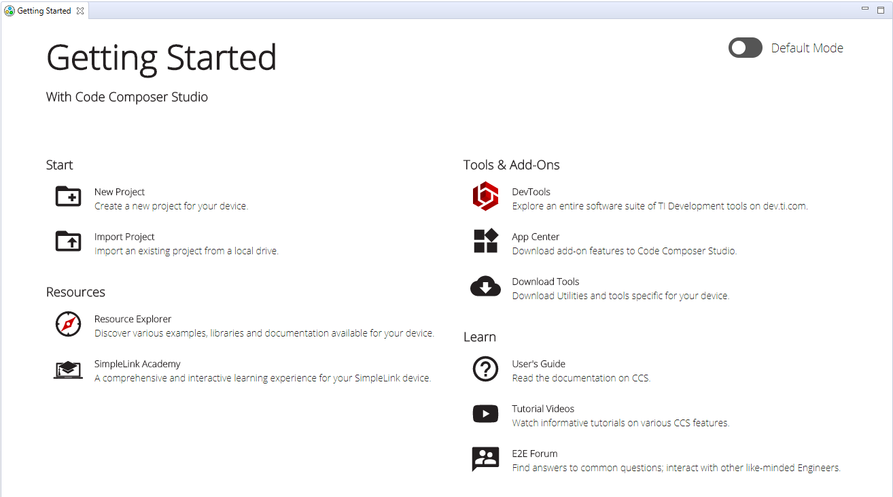
For more details, please refer to the Getting Started view feature overview.
5.2. Resource Explorer¶
The Resource Explorer helps you find all the latest examples, libraries, demo applications, data sheets, and more for your chosen platform.
The Resource Explorer can be opened from the Resource Explorer button in the Getting Started view or from the View → Resource Explorer menu item.
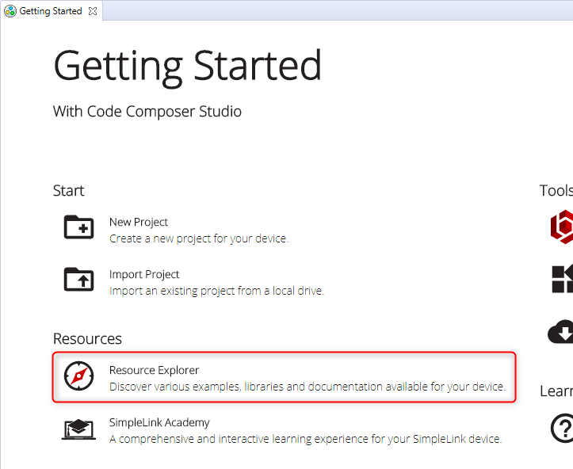
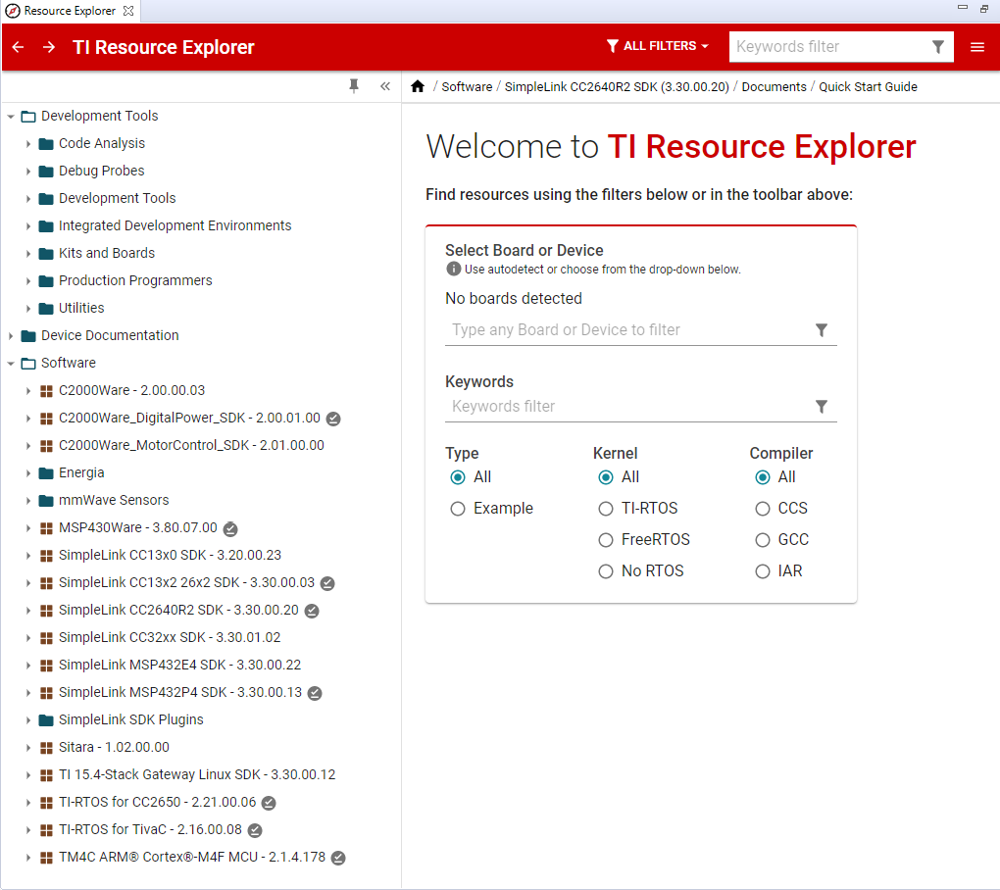
Filtering by device, or by TI LaunchPad Kit, the interface enables you to filter the content to only what is relevant to your chosen platform.
Use the Select Board or Device filter field to search and select the device or TI LaunchPad Kit that you are using. For example, if you are using the CC2640R2 LaunchPad, you can starting typing "cc2640" in the search field to filter the list to easily find your LaunchPad:
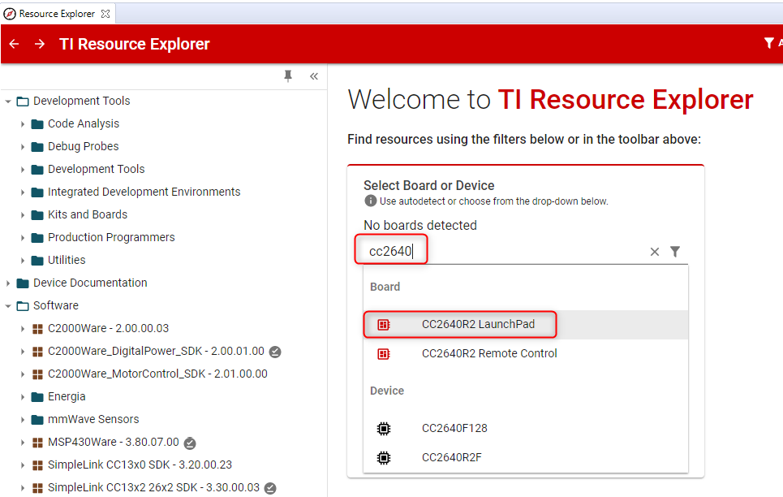
If you have a valid TI kit (such as a LaunchPad Development Kit) connected to your computer, Resource Explorer may be able to autodetect it. If autodetect is successful, you can select the USE MY BOARD option to specify your kit:
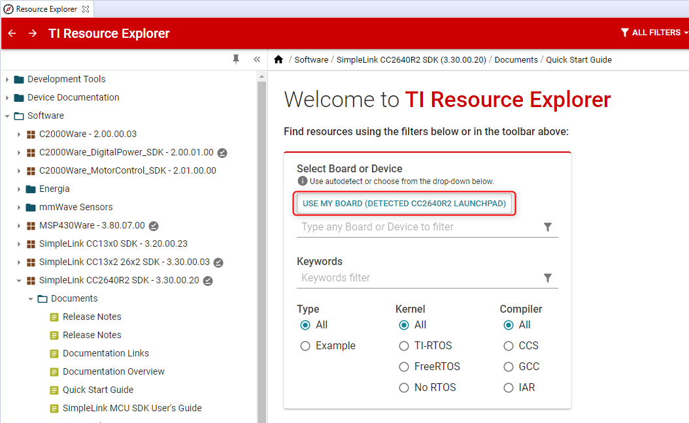
Once your device or TI LaunchPad Kit is selected, the filter will be applied and only content relevant to your selection will be displayed. You can now browse through the displayed content to learn more about your device, board, relevant tools, and available software packages.
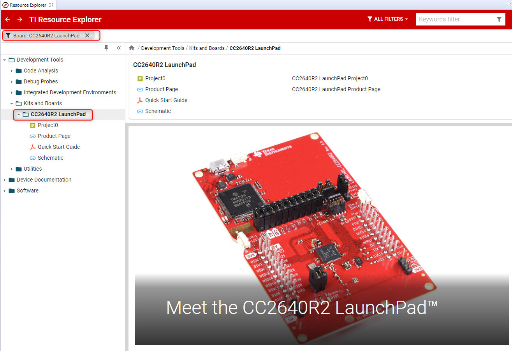
The best way to get going with software development on your target is to start with some existing examples for your target. Many examples are included with the software package with supports your device, and many of these software packages are accessible right from Resource Explorer.
Note
Not all devices are supported via Resource Explorer. It is recommended to visit ti.com for more information on your device and available resources for it.
5.3. Importing a CCS Project¶
CCS projects must be imported into the current CCS workspace before they can be used. The most convenient way to import example CCS projects is from Resource Explorer, as mentioned in some of the sections above.
If the example project is not available from Resource Explorer, then the project can be manually imported using the Import CCS Eclipse Projects wizard:
Go to menu Project → Import CCS Projects.
Next to Select search-directory, click Browse and browse to the location of a project OR if the project is available as an archive, then choose Select archive file and click on Browse to browse to archive.
Select the desired project(s) from the list of Discovered projects.
Leave the Copy projects into workspace option checked if you want to copy the projects into the workspace, otherwise uncheck the box. If unchecked, the project will continue to reside in its original location and all modifications/actions taken on the project will modify it in its original location.
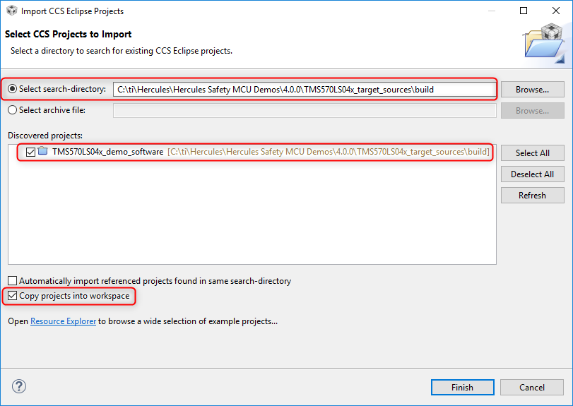
If the Copy projects into workspace option is checked, everything in the project folder will be copied to the workspace. That includes the project files and any source files that are present within the project folder. If the original project has linked resources those will NOT be copied to the workspace. Before editing resources make sure to check if the project references linked resources from another location. Refer to this section on linked files for more information.
- Depending on how the original project was created (whether it was made portable or not) it may not be advisable to check the box to copy project into workspace as it could break paths to some of the resources.
- Example projects in most TI software packages (such as TivaWare, ControlSuite, C2000Ware, SimpleLink SDK) are designed such that they CAN be safely copied to the workspace.
Once the project has been imported into the workspace, it will be visible in the Project Explorer view.
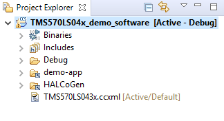
When a project created with an older version of CCS is imported into the workspace of a newer CCS version, the project will be migrated to support the newer version of CCS. This may prevent the project from being imported or opened again with the older CCS version. This is especially true for major CCS revision number differences (CCSv9 → CCSv8) while minor revision number differences (CCS8.3 → CCS8.2) may not be impacted as much.
One way to work around this is to check the option Copy projects into workspace when importing the project into newer CCS. That way each version of CCS can open its own version of the project as they are in different workspaces.
The same rule also applies when a project created in a newer version of CCS is imported into an older version of CCS. CCS projects are not backward compatible. If you want to use a CCS v9 project with CCSv8, for example, it is best to create a new project in CCSv8 and copy over the source files and settings.
For more information on importing CCS projects, please refer to the relevant section in the Projects and Build chapter.
5.4. Creating a New CCS Project¶
Creating a new CCS Project from scratch requires a bit of prior knowledge about the device. Hence, it is recommended to always start with an existing CCS example project first - assuming one exists. Once some experience is gained working with the existing example, one can look to creating a new CCS project from scratch. There are also rare cases where a CCS example does not exist for a particular device. This is also another scenario where one would want to start with creating a new CCS project.
To create a new CCS project, follow the steps below:
Go to menu Project → New CCS Project... or File → New → CCS Project.
- In the New CCS Project wizard:
- Type or select the Target device.
- Optionally select a Connection type if it is not auto-populated (or the auto-populated value is incorrect).
- Type in a Project name.
- Optionally de-select the Use default location check box and set the project storage location. By default, the project will be created inside the workspace directory.
- The Compiler version will default to the latest version of compiler tools that CCS has discovered for that device family. You can change the Compiler version if there is more than one version in the drop-down list.
- Tool-chain contains a few default settings for the project based on the Target selected. This includes Output type which defaults to Executable but you can select between creating an Executable project, Static Library project, or System project. An Executable project generates an executable file (.out) that can be loaded and executed on a target device. A Static Library project generates a library of object modules. A System project is a special type of project designed to simplify management of multiple projects that are associated with different individual cores of a multicore device. For more information on System projects, please refer to the relevant section in the Projects and Build chapter.
- Lastly, select a Project template/example as a starting point, and click Finish. Alternately, if the option is presented, you may open Resource Explorer to browse and import example CCS projects.
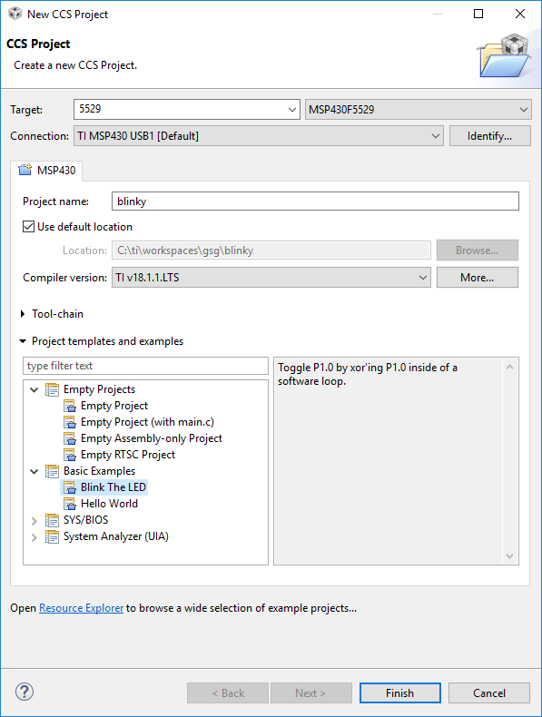
The new project will appear in the Project Explorer view and will be set as the currently active project.
Depending on the template selected, some source files are added to the project by default to ease the process of building and loading the program to the target device. You may add your own source files to the project and customize it further using the Project Properties dialog.
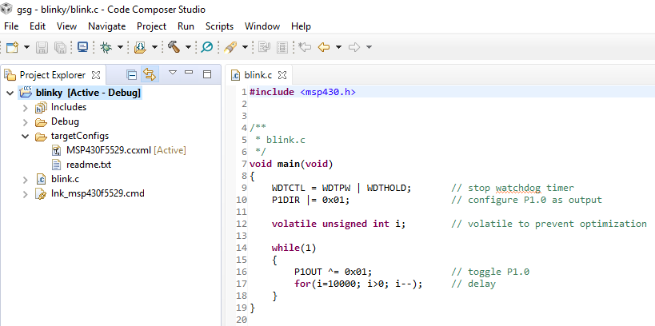
For more information on creating non-CCS projects, please refer to the relevant section in the Project Management and Build chapter.
Warning
Depending on the device, compiler, and template used, additional manual changes may be needed to the project. This could include adding additional initialization code or linker command files. This requires additional expertise on the device, hence why it is strongly recommended to start with an existing example if possible.
Once a new project has been created, additional source files can be added or linked to the project. Please refer to the relevant section in the Project Management and Build chapter.
5.5. Building and Running Your Project¶
Once your project has been created/imported and any necessary manual changes completed, the project can then be compiled and loaded to the target for execution/debug. There is one easy option to do all this - using the Run → Debug menu. This menu item will automatically do the following:
- Prompt to save source files (if necessary).
- Build the project (incrementally).
- Start the debugger (CCS will switch to the CCS Debug perspective).
- Connect CCS to the target.
- Load (flash) the program on the target.
- Run to main.
Note
The above sequence of steps can be customized by modifying the debugger options. It is also possible to just only build the project (Project → Build Project) without starting the debugger. Please refer to the relevant section in the Project Management and Build chapter and the Debugging chapter for more information.
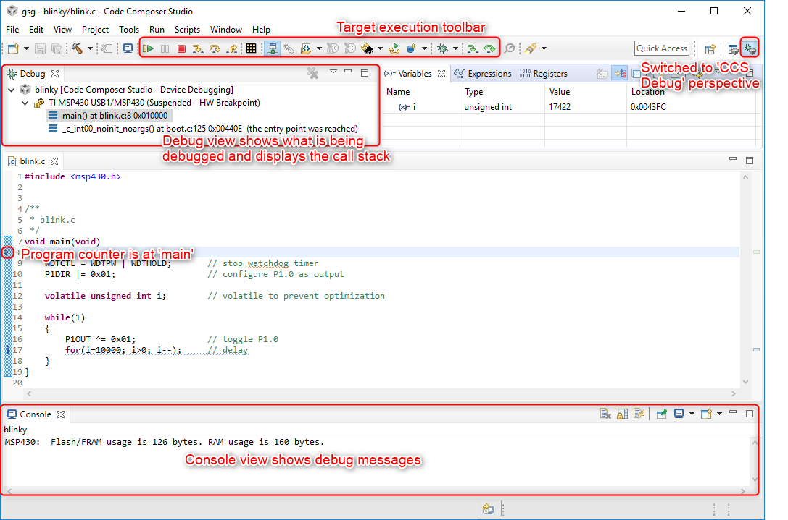
5.6. Customizing the Environment¶
The Eclipse framework that is leveraged by Code Composer Studio allows for extensive personalization. The majority of these settings are located in the Preferences dialog.
5.6.1. Keyboard shortcuts¶
Keyboard shortcuts are associated with many actions in Code Composer Studio. It is possible to change these key combinations and to assign new shortcuts to actions that do not currently have an assignment.
In the Preferences dialog select General → Keys in the tree on the left. Here you will see a list of all commands and any key assignments that have been made. The list of commands is quite long. You can make use of the filter box above the list to filter the list of commands displayed.
Once you have located the command you are interested in, simply select it and then use selections at the bottom to make your new key assignment. If there are any conflicts with existing commands they will be displayed in the conflicts box.
5.6.2. Colors and fonts¶
It is possible to change the color, size, font, background... of most elements in the environment. Many of these settings are captured in collections called Themes that you can switch between to change a group of settings at once.
In the Preferences dialog you can select a Theme by going to General → Appearance in the tree on the left. For example you can then change the Theme to the Code Composer Studio - Dark theme.
Individual colors and fonts can be changed by expanding Appearance in the tree on the left and selecting Colors and Fonts.